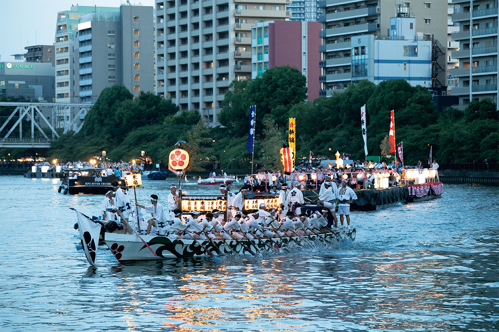
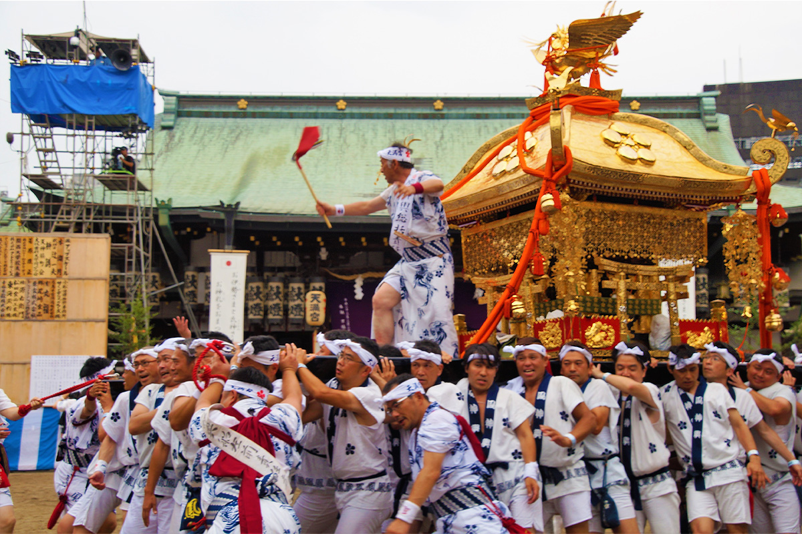
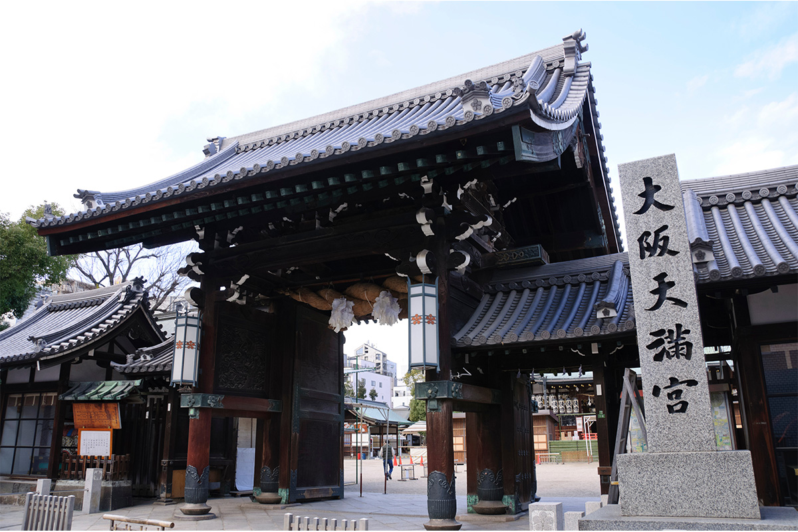
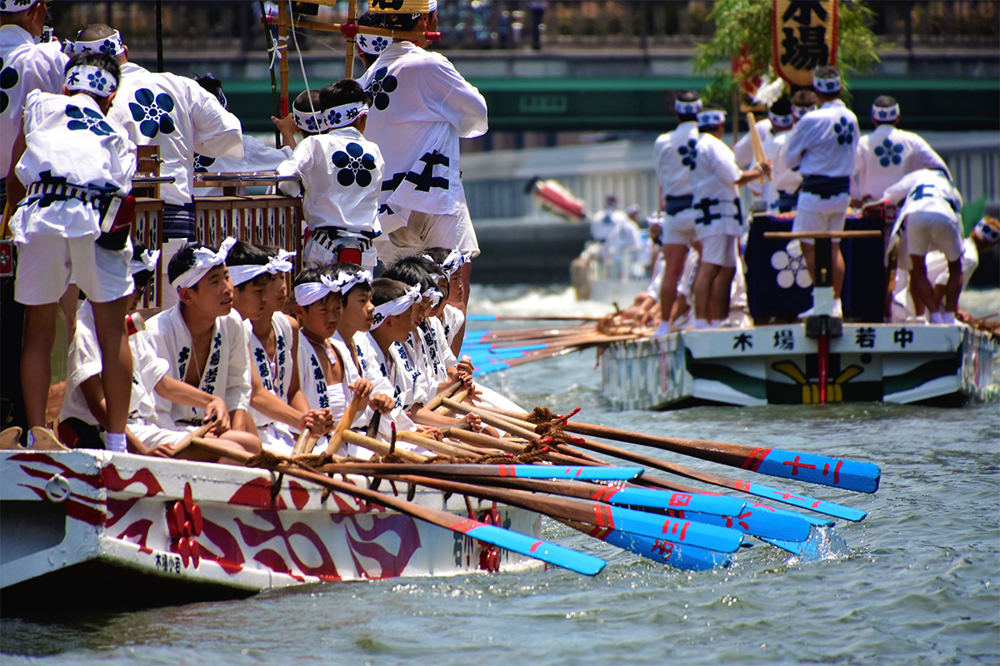
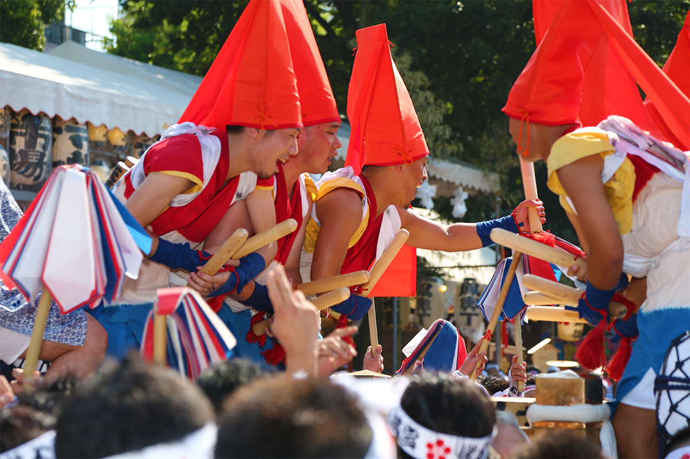
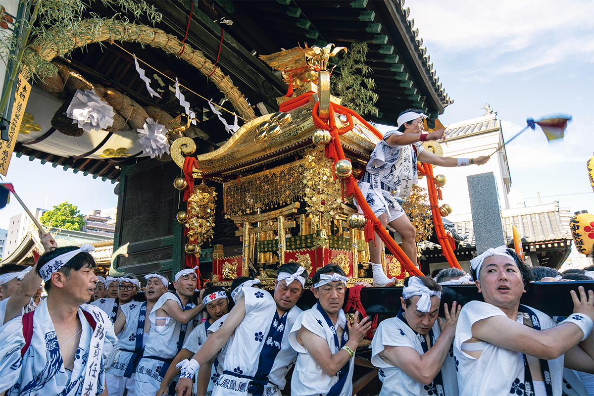
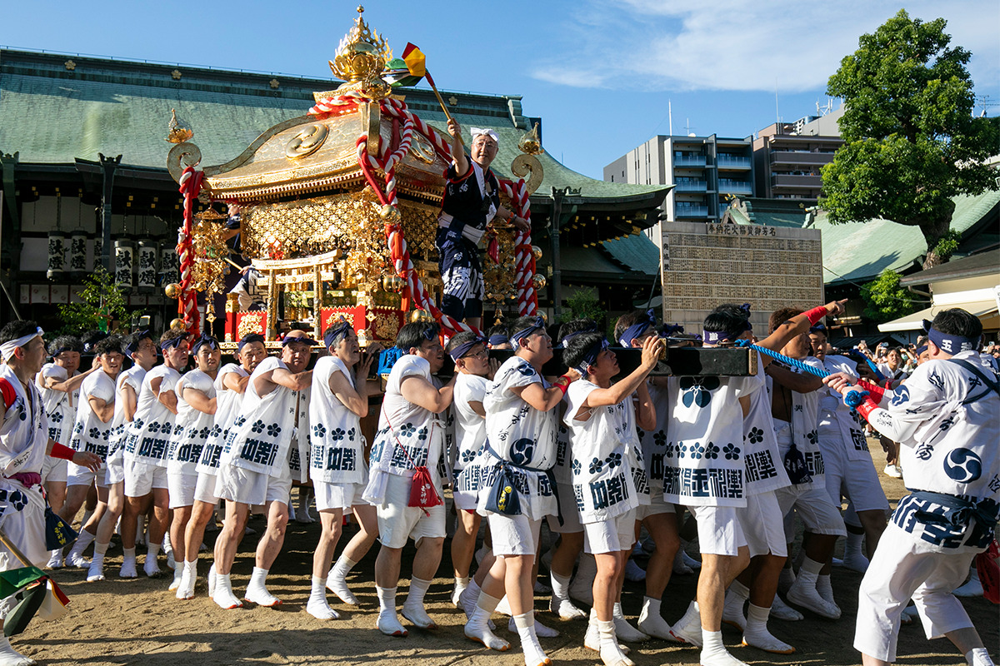
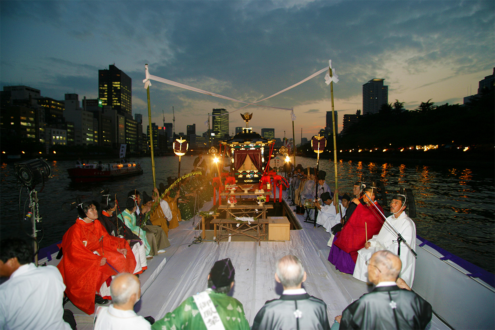
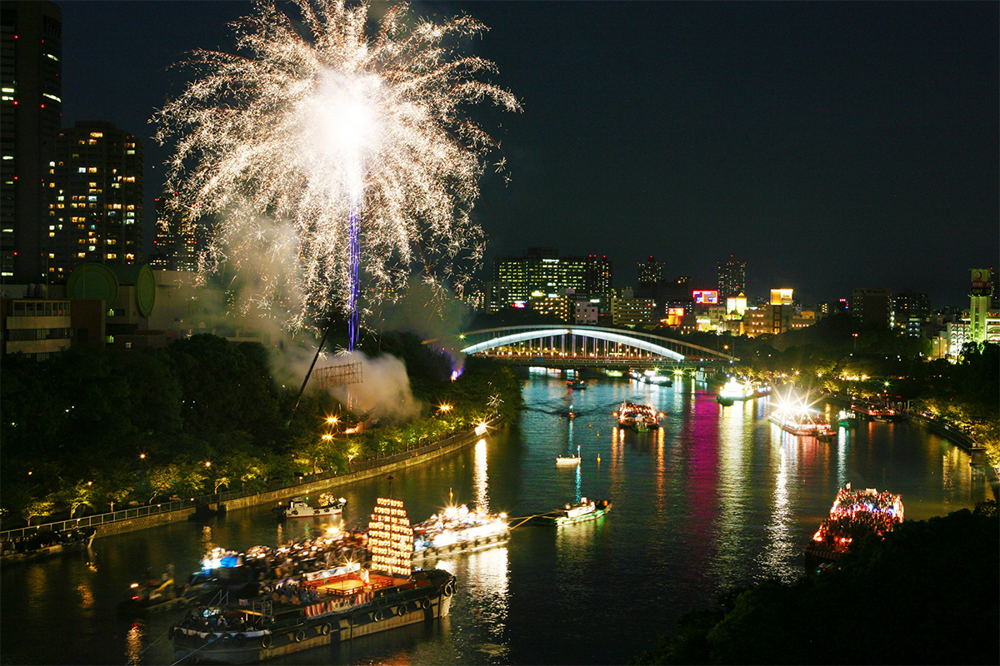
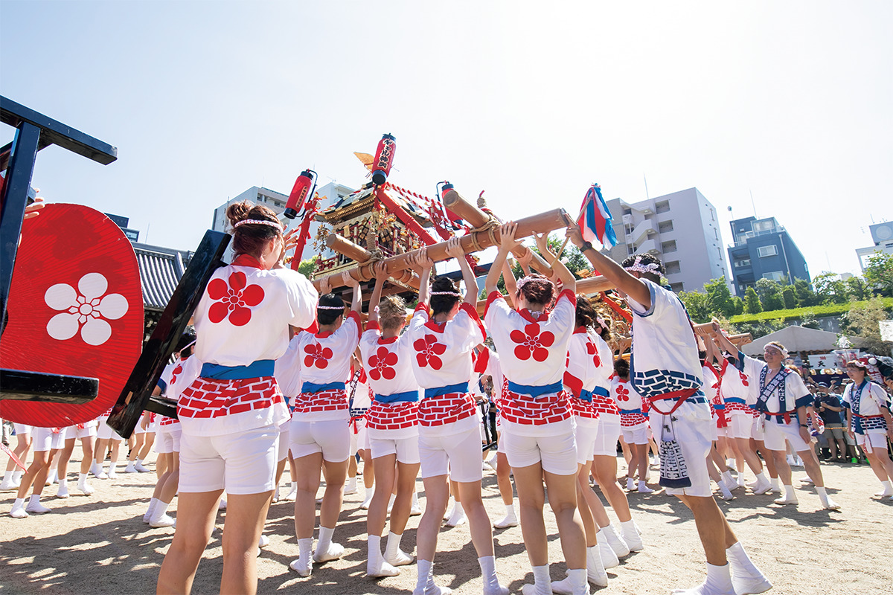

Префектура Осака · Осака · праздник
Тэндзин-мацури в Осаке: сто лодок на реке, огонь в небе и тысяча лет истории

Каждый год 24 и 25 июля Осака отдаёт свою главную реку празднику Тэндзин-мацури. Его называют одним из трёх великих праздников Японии, а на улицы и набережные в эти дни выходит до 1,3 миллиона человек.
Праздник
Один из трёх великих
Праздники в Японии издавна связаны с жизнью людей, и по ним хорошо видно, чем живёт каждая местность. На многие из них пускают и путешественников: можно встать рядом с горожанами, разделить их день и заодно многое узнать об истории страны. Поездка ради праздника запоминается совсем иначе, чем обычный осмотр достопримечательностей.
Тэндзин-мацури святилища Осака-Тэммангу проходит ежегодно 24 и 25 июля. Вместе с киотским Гион-мацури и одним из больших праздников Токио его относят к трём великим праздникам Японии. Какой именно токийский праздник входит в эту тройку, говорят по-разному: одни называют Санно-мацури, другие Канда-мацури.

На самом деле праздник длится около месяца: с благоприятного дня в конце июня до 25 июля здесь проходят разные обряды и церемонии. Главный день 25 июля, хонмия-сай. Накануне, на вечернем празднике ёмия-сай, совершают ритуал хоконагаси-синдзи: в реку Додзимагава, которая течёт через центр города, опускают священное копьё из некрашеного дерева. Этот строгий обряд и считают истоком всего праздника.
Святилище
Бог, которого боялись

История места началась в 650 году. Император Котоку тогда строил на этих землях свой дворец Нанива и поставил к северо-западу от столицы святилище Дайсёгун-ся, чтобы оно оберегало город. С тех пор здешнюю рощу звали «лесом Дайсёгун», а потом «лесом Тэндзин». Память о ней живёт в названиях двух соседних кварталов, Минами-Моримати и Кита-Моримати, «Южного» и «Северного лесного».
Святилища Тэммангу посвящены Митидзанэ Сугаваре (845–903), учёному и государственному деятелю эпохи Хэйан. В 901 году его оклеветали придворные из рода Фудзивара и сослали на остров Кюсю, в далёкий Дадзайфу. По пути он зашёл в Дайсёгун-ся помолиться о благополучной дороге. В ссылке Митидзанэ и умер. Вскоре один за другим при странных обстоятельствах стали умирать те, кто его погубил, а страну охватили бедствия. Люди решили, что это мстит дух опального министра. Чтобы вернуть ему доброе имя и успокоить его, Митидзанэ стали почитать как бога, и так появились святилища Тэммангу.
История
От копья на воде к сотне лодок
Тэндзин-мацури родился из того же страха перед бедствиями. Его смысл в том, чтобы умиротворить божество, не дать ему разгневаться и вымолить мирную жизнь. Самый древний его обряд как раз хоконагаси-синдзи. В 951 году, через два года после того, как здесь стали почитать Митидзанэ, с берега перед святилищем пустили по воде новое копьё. Там, куда его прибило, устроили временное пристанище божества, отабисё, и провели обряд очищения. Жители святилищных земель снарядили лодки и поплыли за отдыхающим божеством. С этого, как считается, и начался праздник, а речное шествие лодок за божеством называют фунатогё.
В эпоху Эдо копьё перестали пускать по-настоящему: отабисё теперь ставили на одном и том же месте, и у шествия появился постоянный маршрут. Раньше течение решало многое, а теперь к праздничным обрядам можно было готовиться заранее.

Эпоха Эдо была долгой и мирной, Осака богатела как город торговцев, и на их деньги праздник становился всё пышнее. Каждый квартал придумывал свои куклы «омукаэ-нингё» для встречи божества и наряжал ими лодки, идущие к отабисё. Так Тэндзин-мацури превратился в большое зрелище, ради которого собирались толпы.
Шествие лодок прерывалось, когда после реставрации Мэйдзи экономика Осаки пришла в упадок, и во время Второй мировой войны. Но оно каждый раз возвращалось и до сих пор остаётся главным событием праздника. В 1994 году, в честь открытия международного аэропорта Кансай, Тэндзин-мацури впервые провели за границей, в австралийском Брисбене. Туда прилетели около тысячи священнослужителей и прихожан святилища, чтобы показать не только весёлую сторону праздника, но и строгость его обрядов и великолепие шествия, которое веками создавали осакские купцы.
25 июля
Барабан, паланкины и праздник огня и воды
Главный день начинается с сухопутного шествия рикутогё: по улицам несут паланкины микоси, и город заполняется людьми. Впереди всегда идёт барабан.

Обычай связывают с историей о верном вассале дома Тоётоми: он молился в Тэммангу, чтобы беда обошла его господ стороной. Барабан, как говорят, подарили святилищу сами Тоётоми.


Дойдя до реки, участники сухопутного шествия садятся в лодки. За барабаном по реке Окава, бывшей Ёдогаве, плывут лодка с паланкином гохорэн, в котором едет божество, лодки сопровождения и ещё около ста судов. На воде играют священные танцы кагура, театр но и местные представления. Смысл шествия в том, чтобы божество из главного зала святилища само увидело с лодки, как живёт его город.

Тэндзин-мацури знают как шумный праздник, но рядом с весельем здесь тихо и сосредоточенно молятся о мире. А когда темнеет, над Осакой поднимается фейерверк, который тоже приносят в дар божеству. За огонь в небе и лодки на воде праздник называют «праздником огня и воды».

Традиция
Женский паланкин

Официально он называется «женский священный паланкин Тэндзин-мацури», но все зовут его «гяру-микоси». Эта «традиция» молодая: её ведут с 1981 года. Из желающих отбирают 80 женщин, они надевают яркие куртки хаппи и по очереди несут два паланкина. Их звонкие голоса и напор заряжают весь квартал.
Тэндзин-мацури не раз оказывался на грани исчезновения. И каждый раз его спасали упорство и задор коренных осакцев, которые берегли традицию и делали праздник ещё ярче. На их энергии он держится и сегодня.
Тэндзин-мацури, святилище Осака-Тэммангу
- Адрес
- префектура Осака, Осака, район Кита, Тэндзимбаси, 2-1-8
- Телефон
- +81 6-6353-0025
- Даты
- ежегодно 24–25 июля
- Как добраться
- 2 минуты пешком от станции JR Осака-Тэммангу, 4 минуты от станции метро Минами-Моримати
Фото: Scirocco340.